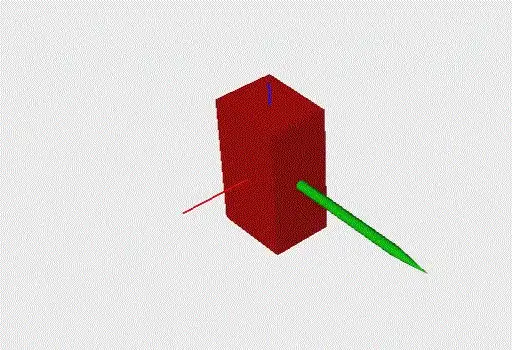

现代机器人学¶
还记得入门部分留下的那些坑吗：
- 为什么不能直接对欧拉角求导获得速度？
- 是否可以直接对运动学正解的结果求偏导？
- 为什么欧拉角这样的三参数表示会有 Gimbal Lock，逼得我们去接受四元数？
当时我说：「姿态和角速度无法直观理解很正常，因为它们不是在笛卡尔空间内，等后面学到更多数学，你们才能真正理解它。」
现在，是时候填坑了。
为什么需要新的数学语言¶
问题的根源在于：位置属于欧式空间，而姿态不属于。
对于两个位置 \(p_1\)、\(p_2\)，从 \(p_1\) 运动到 \(p_2\) 的最短路径是一条直线，我们可以放心地对它们做加减、数乘、插值：
而对于姿态，不论用旋转矩阵、欧拉角还是四元数描述，都不能用简单的向量加减法找到两个姿态之间的最短路径。就像地球上两个城市之间最短的航线，并不是地图上把两地连起来的直线，而是一条曲线——测地线。
再往深一步：进阶的工作到处都要用优化，优化经常要使用梯度信息。但是，你发现在这些「弯曲」的空间上，很多时候你根本不知道梯度应该怎么定义。
处理这类空间，数学家早就准备好了工具：李群李代数，它可以非常方便地描述 SO(3)、SE(3) 空间中的对象。这一章我们分两步走：先用旋量与指数积（Product of Exponentials, PoE）重新认识一遍机器人建模；再往前一步，用群的语言把插值、过渡、约束这些日常操作统一起来。学完这一章，你之前对于四元数、角速度之类的疑问将一扫而空。
补充数学
为了能更好的掌握后面内容，建议你再补充一些数学知识。
-
数值计算方法：很多时候，我们都是通过计算机来实现算法功能的，所以，你必须了解基本的数值计算方法，如数值微分、数值积分等。这部分可以看《Numerical Methods for Engineers》[4]
-
凸优化：这个世界很多问题都不容易找到解析解，我们得用优化方法来计算。所以，你必须了解如何建立优化模型，并知道如何用代码进行求解。这里，我推荐 Stanford 的公开课《Convex Optimization》
-
李群李代数：优化方法经常要使用梯度信息，但是，你发现很多时候你不知道怎么定义梯度。李群李代数正是处理这件事的经典数学工具——也就是本章接下来的内容。
从旋量入门：Modern Robotics¶
李群李代数对于很多工科学生可能一时难以接受（名字听着就怪怪的）。这里，我推荐从 Modern Robotics 开始，这是一本面向本科生的教材，写得非常清晰易懂。[5]

你可以在网上找到它的很多信息，Coursera 上也有对应的课程：《Modern Robotics》。
上完这门课，你能掌握旋量/指数积（Screw/PoE）这一全新的建模方式，同时，你会发现机器人运动学、动力学建模变得如此简单、干净。
这时候，你已经触碰到了一点点李群李代数。之后就可以去看一些针对工科生的李群李代数教材，如《Notes on Differential Geometry and Lie Groups, I & II》；再根据自己的研究方向，把它跟手头的问题结合起来——只要涉及优化、空间变换的方向，都可以跟李群李代数结合。
顺便回答几个经常被问到的问题：
- 旋量和 DH 孰优孰劣？ 都重要，无优劣之分。DH 直观、容易掌握，很多场景下已经够用了；旋量更接近刚体运动的物理本质，对一些问题的分析很有帮助。就像问「牛顿定律」与「相对论」孰优孰劣——在合适的时候使用合适的方法就行了。建议还是先完全掌握传统的 DH、空间变换，再来学旋量，两者并不冲突。
- 听说 DH 建模有奇异性，而指数积（PoE）没有？ 确切地说，那是 DH 的参数化奇异：当相邻两个关节轴接近平行时，DH 坐标系中 \(x\) 轴的方向定义不明确，微小的装配误差会引起 DH 参数的剧烈变化（运动学标定文献里，Hayati 早在 1985 年就为此专门增加了一个辅助参数 \(\beta\)）。PoE 避免的是这种数学表达上的奇异。而机器人本身的运动学奇异是构形相关的属性，入门部分说过，它不会因为换一种建模方法而消失。
群的语言：⊕ 与 ⊖¶
学到这里，有些小伙伴可能会说：「旋量、指数积这些方法，似乎只是涉及一个表征问题，并没有什么太大的优势。」
这个认识是不对且危险的。就像我们刚开始学线性代数的时候，看到矩阵乘法就说「这不就是把多元一次方程组换个写法嘛」——一开始就拒绝新的思考方式，等后面线性组合、零空间、映射这些真正有用的工具出现的时候就会比较吃力，甚至可能因为一开始就拒绝，以至于没有机会接触更高级的工具。
所以，这一节我们把视角再抬高一层，看看「群」这个概念到底统一了什么。
我们可以用一个向量（高维空间中的一个点）来描述空间中任意物体的状态，例如：
- 刚体位置：\([x, y, z]\)；
- 刚体位姿：\([x, y, z, o_x, o_y, o_z, o_w]\)；
- 机械臂构形：\([q_1, q_2, \dots, q_6]\)。
把一个物体的所有状态定义成一个集合，再在集合上定义封闭的基础运算，就得到了一个群（Group）：
- 群加法 \(\oplus\)：\(A, B \in G,\ A \oplus B \in G\)；
- 零元素 \(E\)：\(A \oplus E = E \oplus A = A\)；
- 逆运算 \(\ominus\)：\(A \oplus (\ominus A) = (\ominus A) \oplus A = E\)；
- 标量积 \(\odot\)：\(\alpha \odot A = A \oplus A \oplus \cdots \oplus A\)（\(\alpha\) 个 \(A\)「相加」，再把 \(\alpha\) 从自然数拓展到实数）。
来看两个例子。串联机械臂的关节空间，用向量加法定义群运算：
空间刚体的姿态，用 3×3 旋转矩阵描述、用矩阵乘法定义群运算，也就是 SO(3) 群：
（要计算矩阵的 \(\alpha\) 次幂，就需要引入矩阵指数与矩阵对数，它们都是从群加法推导衍生出来的——这也正是「指数积」里那个「指数」。）
这样，不同的空间就被统一的 \(\oplus\)、\(\ominus\) 操作统一起来了，你会发现很多好玩的事情。例如，两个状态之间的直线插值可以统一写成：
代入关节空间，它就是我们熟悉的线性插值：
代入姿态空间：
代入公式算一算，你会发现它跟四元数 Slerp、轴角插值的结果是一样的。
这个统一的插值，其实就是在流形上沿着最短路径连接两点：在笛卡尔空间里，这条轨迹叫直线；在李群里，它的名字叫测地线（Geodesic）。
再往后你会看到：机器人运动学就是把一个个 SE(3) 刚体位姿叠加在一起，用李代数（旋量）能很容易地描述关节引起的运动，Adjoint Map 又能很方便地把李代数转换到不同的参考坐标系；还有运动规划中的随机采样、优化过程中的雅可比计算、在李群上定义黎曼度量来表示动能……原本用经典方法非常麻烦的问题，一下子全都大一统了，世界如此完美。
一个好玩的小例子：如何计算平均旋转
对同一个姿态测量了 \(n\) 次，得到 \(n\) 个旋转矩阵，求「平均旋转」。所谓平均，就是空间内到这 \(n\) 个元素距离之和最短的那个点：
这个问题目前没有解析解。几种容易想到的做法——欧拉角三个参数直接平均、四元数四个参数直接平均、把所有旋转 Log 到切空间求平均后再 Exp 回去——与数值优化的结果对比，都无法准确算出平均旋转；只有当这些旋转彼此比较接近时，四元数求平均可以得到近似正确的结果。

具体详细介绍和视频演示可以看我的知乎回答 《获得多个旋转矩阵，如何获得平均旋转？》
应用一：姿态插值与轨迹过渡¶
下面进入本章的重头戏：用两个实际问题，看看这套语言到底能做什么。它们有个共同特点——用传统方法要么做不了，要么做得很别扭；而在群的语言下，解法几乎是「显然」的。
第一个问题来自轨迹规划。假设我们通过人工示教，得到了机器人要经过的几个路径点。由于受到物理世界的限制，机器人无法在这几个路径点之间瞬移，我们必须找到一条连续的路径把它们连接起来。
受惯性的影响，速度的大小与方向都不可以发生突变。如果用最简单的直线插值连接路径点，那么在过渡点处，速度方向必然发生突变——实际执行时，要么轨迹偏离原路径，要么机器人在过渡点处减速到 0，影响控制的精度与速度。

见多识广的读者肯定想到了：教材里介绍过，可以在过渡点用圆弧或者多项式曲线进行过渡，让路径的切向不发生突变。
于是问题来了：位置可以这么干，姿态怎么过渡？或者说，姿态空间的圆弧、多项式曲线是怎么定义的？
有人可能会说，四元数不是有 Slerp 插值嘛。但上一节我们已经知道，Slerp 实际上就是姿态空间的直线插值。让一个刚体依次经过三个姿态，用 Slerp 连接，过渡点处角速度方向照样突变：
{kind=link}

而在群的语言下，答案水到渠成。回想一下 Bezier 曲线是怎么构造的：\(n\) 阶 Bezier 曲线，就是用 \(n\) 层线性插值嵌套出来的。我们已经有了任意李群空间的直线插值定义，自然也就得到了任意李群空间的 Bezier 曲线（多项式曲线）：

如上图所示，利用李群空间表示法获得的 Bezier 过渡，可以保证姿态轨迹的切向不发生突变、角速度方向连续变化。学术界（包括近几年的 ICRA、IROS）不断有关于高阶连续姿态插值的成果发表；而掌握了群的语言，这一方法你自己就能推导出来。
应用二：动力学约束下的高速搬运¶
第二个问题更有意思一些。机械臂的一个主要用途就是搬运。对于液体搬运这类应用，我们对整条搬运轨迹都有要求，而不仅仅是让机械臂从起点走到终点——比如让末端全程保持水平。而如果我们提高要求，希望机器人搬得更快，那么轨迹就需要满足一定的动力学约束了。
这里有两个关键点：其一是找出需要满足的动力学约束，其二是使用合适的方法建立模型。
我们先从一维问题开始（这其实是我们的一道编程笔试题）：一个只能水平移动、外加一个旋转自由度的机构，要把一杯水从左边运送到右边，保证水不洒出来。

要满足的约束很容易找到，就是中学物理：水平运动的加速度与重力的合成加速度，方向要垂直于支撑面。
然后是建模求解。一种方法是建立几组约束，将其作为一个优化问题求解。但这里提供另一种思路：直觉上，这个问题的自由度只有 1，而不是 2（位置与角度）——水平加速度 \(a\) 与倾角 \(\theta\) 是一一对应的。于是，我们可以定义一个空间 \(R(1) \oplus SO(2)\)：
- \(R(1)\)：水平运动的加速度 \(a\) 所在的空间；
- \(SO(2)\)：倾角 \(\theta\) 所在的空间；
- \(\oplus\)：定义两个子空间之间的关系，\(\theta = -\operatorname{arctan2}(a,\ g)\)。
在这个空间中任意选择一个点，都自动满足约束。再考虑到加速度不能突变，我们可以直接在这个空间的切空间（加加速度，jerk）上随机采样，然后沿着积分链走：jerk → 加速度 → 速度 → 位置；同时，加速度 → 倾角。相当于不论给什么样的加加速度输入，机构的运动始终满足前面所述的动力学约束：

回到最开始的问题，同样可以找到这么一个始终满足动力学约束的空间：\(R(3) \oplus SO(3)\)。一个原本看起来很复杂的问题（六自由度、带动力学约束），就变成了一个简单的三自由度问题——当然，所有的积分等运算都是在 SE(3) 空间内进行的。

这个思路，跟后面自主规划一章里「带约束的规划」是一脉相承的：与其在全空间里采样、再把样本投影回约束面，不如直接把约束流形构造出来，在里面自由地采样。